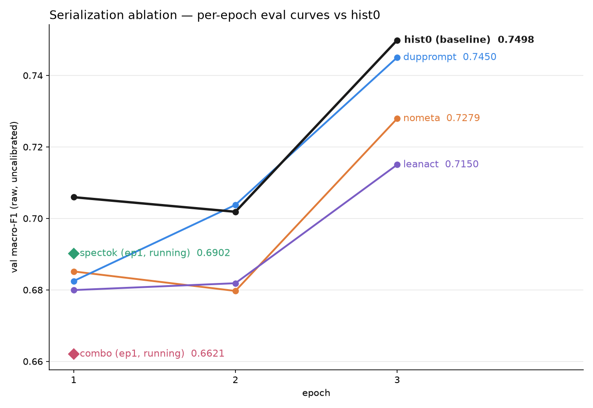
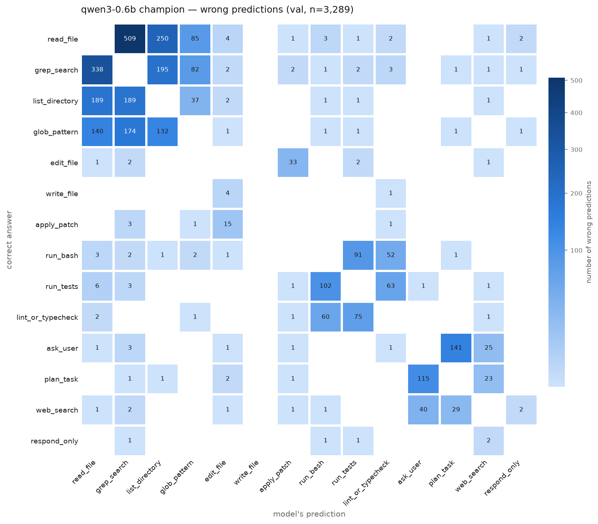

2026 AI·SW중심대학 디지털 경진대회
AI Agent 행동(Action) 의사결정 예측 챌린지
Given session information, predict agent's next action
session_meta: user_tier: pro language_pref: ko turn_index: 3 budget_tokens: 48210 workspace: git_dirty: true last_ci: failed open_files: [config.py, schema.yaml] history: role: user content: "Config 어디서 불러와?" role: assistant_action name: grep_search args: {pattern: Config, scope: src/} result_summary: "14 matches in 5 files" current_prompt: "그럼 그 파일 열어봐"
read_file · grep_search · list_directory · glob_pattern
edit_file · write_file · apply_patch
run_bash · run_tests · lint_or_typecheck
ask_user · plan_task · web_search · respond_only
| Training samples | 70,000 |
| Test samples | 30,000 |
| Language — ko / en / mixed | 64 / 25 / 10% |
| Action classes | 14 |
| Metric | macro-F1 |
The model constraints
The model must physically fit and finish — offline, on a fixed eval server.
a single modest GPU
→ ~50 samples / s
a 568M fp32 model is 1.8 GB
pip install only, ≤ 10 min
Surveying HuggingFace for a multilingual backbone
We need a model that handles KO + EN, fits the T4 / 1 GB envelope, and is openly licensed. We fine-tuned every shortlisted candidate and selected the backbone by result.
| Candidate | Params | cal F1 |
|---|---|---|
| Qwen3-Embedding-0.6B | 596M | 0.7753 |
| BAAI/bge-m3 | 568M | 0.7568 |
| gte-multilingual-base | 305M | 0.7361 |
| KURE-v1 (KO bge-m3) | 568M | 0.7297 |
| granite-311M | 311M | 0.7153 |
| xlm-roberta-large | 561M | 0.7079 |
- Multilingual — KO + EN in one tokenizer
- ≤ ~600M — fits T4 / 1 GB after pruning
- Open license — competition-safe
Methods we tried — results & findings
On the shortlist we ran controlled experiments across every lever. Most were neutral or negative; a few paid off. The catalog:
| Exploration | Result | Verdict |
|---|---|---|
| Prompted LLM + guardrail | ~0.30 F1 · 6 s/sample | dropped (0.30 F1 ceiling, 300× too slow) |
| Full fine-tune · model sweep | champion 0.7753 · LB 0.767 | adopted |
| Logit calibration | +0.7 self-graded · ~0 honest | no practical benefit |
| Head variation (depth / activation) | ≤ ±0 | changing head layers — no practical benefit |
| Input serialization variations | some benefit | adopted — deep-dive §10 |
| Embedding + depth pruning | −64% size · 1.85× faster · ~0 loss | shipped |
The labels are only weakly semantic
The "obvious" reading of a prompt is usually wrong. Across all 70k samples, the most indicative surface phrasings match their intuitive class only 8–53% of the time.
| "lint" → lint_or_typecheck | 15% |
| "best practice" → web_search | 20% |
| "plan / 계획 / 정리" → plan_task | 8% |
≈ frozen probe
(steer)
(rewrite)
Embedding-vocab pruning: −64% size, zero accuracy loss
In a 568M encoder the 250k-row token-embedding matrix is half the file — but the synthetic data uses only 9,371 unique tokens. The rest is dead weight we never trained.
still over
250k→55k rows
| 24 transformer layers | 605 MB |
| token embeddings (250k) | 512 MB |
| position emb + head | 19 MB |
Depth pruning wins; width pruning loses
To hit the time budget with headroom, we studied where a trained encoder can be cut. The residual stream tolerates losing depth — but not width.
| 12L (evenly spaced + recover-FT) | 0.7619 |
| 24L parent | 0.7568 |
| on 24L | collapsed |
| on 12L (trained fine) | 0.6948 (−6.7) |
Where the remaining gains are — three levers
Model and recipe are fixed; the error analysis says the bottleneck is input information, not capacity. So the remaining work narrowed to three levers.
Find the input format that preserves the most signal per token.
Target the 3 action groups the model most often mixes up.
Combine folds for free accuracy — within the deployment envelope.
The input has no removable fat

| Remove / change | cal F1 | Δ |
|---|---|---|
| hist0 — full input | 0.7568 | — |
| double the prompt | 0.7516 | −0.5 |
| special action tokens | 0.7411 | −1.6 |
| drop metadata header | 0.7346 | −2.2 |
| lean history (verdicts) | 0.7291 | −2.8 |
| everything (combo) | 0.7169 | −4.0 |
92% of errors sit in just 3 action groups

- Explore {read · grep · list · glob} = 66% of all errors — grep↔read is the biggest pair (509+338)
- Execute {bash · tests · lint}
- Non-code {ask · plan · web}
Enrich the input, ensemble the folds
In parallel, a teammate pushed a compact granite-311M (ModernBERT) line with a different serialization philosophy — and it produced our current team-best LB from a single fold.
- Bucketed metadata budget→very_low…high, elapsed→early/mid/late
- Dominant language from language_mix
- Open-file basenames, compact single-line @512
- 5-fold CV with OOF-calibrated bias
What moved the number — and what's queued
- This is a learned-distribution task — full fine-tuning drove 68.8 → 76.70.
- The ceiling is input information, not capacity — identical failures across architectures.
- Compression is nearly free — vocab + depth pruning gave the same accuracy at 388 MB / 2:29.
- Systematic elimination — most standard "tricks" were neutral or negative; a few levers moved it.
- v1 + special tokens — the one positive ablation signal (+1.2)
- richmeta — add location / elapsed / language-mix, bucketed
- 2-fold prune12 ensemble — fits the envelope, diversity for free
best single-model score (Qwen3-0.6B). Deployed track: bge-m3 + granite, in testing.